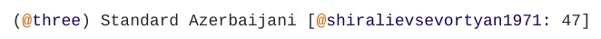

Each feature dataset is accompanied by an introductory chapter. You can browse the Atlas for some examples.
Texts should ultimately be prepared in Rmarkdown. Feel free to write a draft in .doc format first if you find that more convenient, but keep in mind that you will have to convert it to .rmd later.
Below is a list of recommended sections and points to address in the text.
A hypothetical example:
Comparative constructions are usually based on spatial case forms, which consist of a localization and a directionality. Let’s say Chiara only cares about directionality, because differences in localization occur more rarely and do not show an interesting distribution. She can choose to create general categories based on directionality (e.g. essive and elative), and mention in her text that elative includes both super-elative and cont-elative forms.
In-text references to literature use the following syntax:
[@forker2018: 100]
(Forker 2018: 100)
Placing parantheses around the year and page only:
According to Forker [-@forker2018: 100]
According to Forker (2018: 100)
References are cited using a Bibtexkey, same as in the feature datasets.
For the Chapter, you will have to compile your own list of references in bibtex format:
bib.tex.To create subheadings, lists, bold or italic text, see a quick guide on Rmarkdown syntax.
See Section Literature references above on how to cite sources in Rmarkdown.
Examples should contain the number of the example in the text, followed by the name of the language and a reference to the source:

Add glosses to the example using regular CAPS, everything else will be formatted automatically.